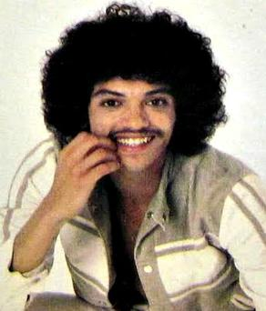

Bobby DeBarge
Robert Louis DeBarge, Jr. was an American singer and musician, best known as the lead vocalist of the R&B group Switch, releasing hit records on the Motown label from 1977 to 1980. He has been noted for his falsetto style of singing. Bobby DeBarge was both mentor and a co-producer of DeBarge, his siblings' band, joining them in 1987.
Complete Discography & Tracklists (4)
2010 Please Don't Let Me Go (The Roots of DeBarge and Switch) 🎵 0 Tracks
No tracks registered.
2020 OML 🎵 0 Tracks
No tracks registered.